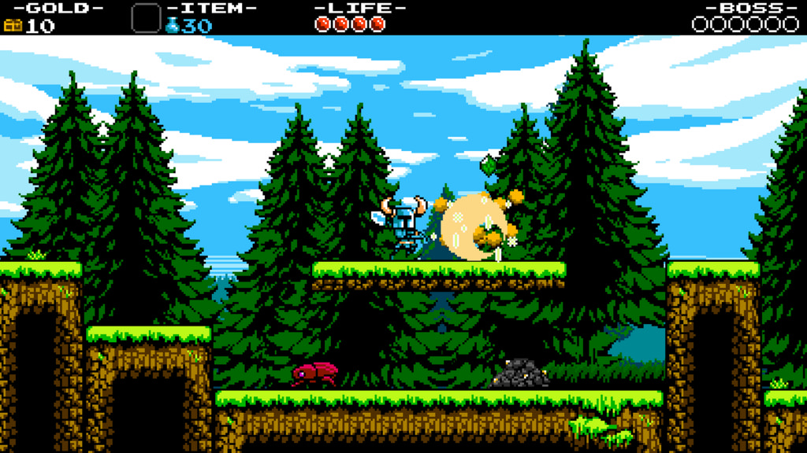
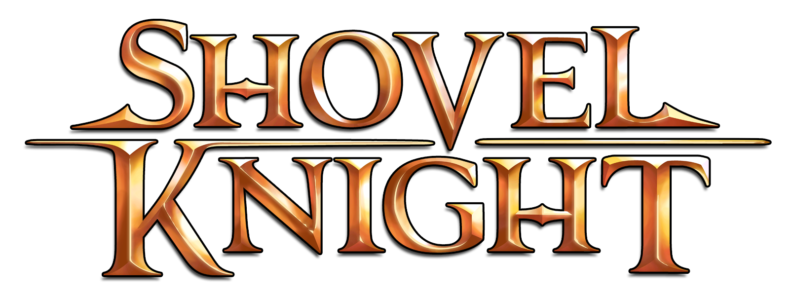

Shovel Knight is a 2D side-scrolling platform game presented in 8-bit graphics (but looks very similar to 16-bit) in which players control the eponymous protagonist as he collects treasure and fights against the Order of No Quarter.
The original Shovel Knight was renamed "Shovel of Hope" after Yacht Club Games began releasing sequels. The complete collection of games can now be purchased as a bundle titled the "Shovel Knight Treasure Trove". The Treasure Trove includes:
Shovel Knight's main means of attack is his shovel, which he can either use to attack enemies head on and dig up treasure, or aim below him whilst jumping to bounce on enemies, similar to the pogo jump from DuckTales or the downward thrust from Zelda II: The Adventure of Link.
By finding a salesman hidden in most levels, the player can purchase secondary items that can be used with a limited supply of magic. These include long-range projectiles, gloves that can punch through dirt blocks, and a locket that makes the player invincible for a brief period.
